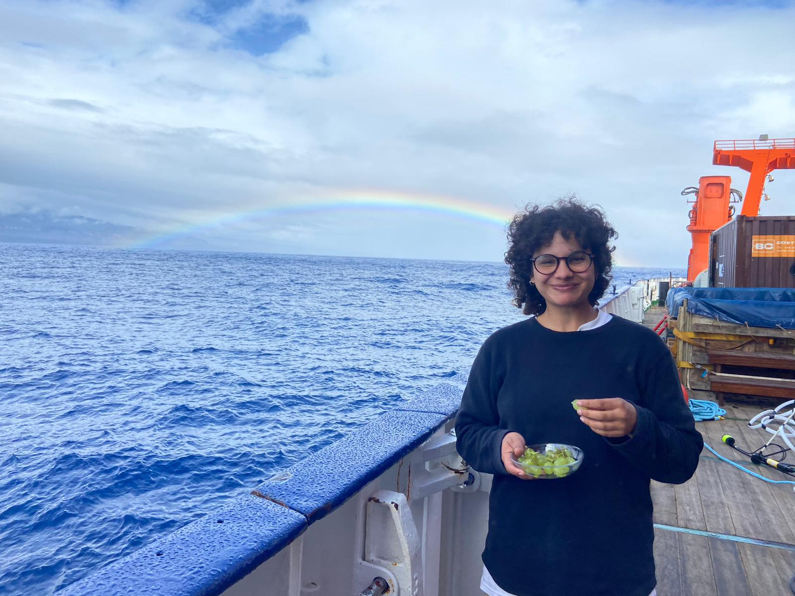

GABRIELLE M. ARRIETA
Welcome !!! 🌿
🏠 HOME

Gabrielle M. Arrieta
PhD Student - Centre for Research into Ecological and Environmental Modelling (CREEM) - University of St Andrews School of Biology
Welcome to my research world — a cozy archive of my academic journey.
I am a researcher working at the intersection of ocean acoustics, marine biology and statistics. My work focuses on using large-scale, opportunistic acoustic datasets to estimate the density/abundance of baleen whales.
I enjoy exploring underwater soundscapes, thinking about temporal and spatial variability in whale calls and using acoustic data to understand the ocean.
Outside of research, I like playing cozy games, baking and encouraging underrepresented groups to pursue higher education.
My PhD is funded as a part of the CORTADO project, find more info about this project here:
📧 ga73@st-andrews.ac.uk
🔗
Linkedin
Research interests: ocean acoustics • marine bioacoustics • whale vocalisations • coding • signal processing • passive acoustic monitoring • density estimation
🎧 Listen to fin whale calls: